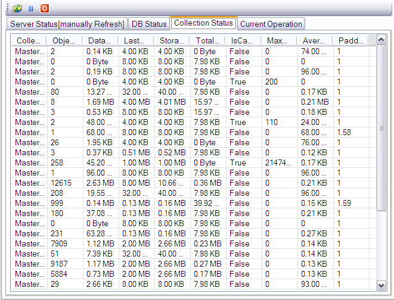

Master-Slave
|
|
|
This application support to manage a Master-Slave server.
Start a master server.
Master can be startup by Dos console like:
cd C:\runmongo\bin
mkdir C:\mongodb\master
mongod --port 28018 --dbpath C:\mongodb\master --master
Start a slave server.
Slave can be startup by Dos console like:
cd C:\runmongo\bin
mkdir C:\mongodb\slave
mongod --port 28019 --dbpath C:\mongodb\slave
--slave --source localhost:28018
You must select the ReadPerference and WriteConcern if the server is a slave server.

|
Replset
|
|
|
This application support to manage a Replset server.
If you have a replset consist of 2 server:
cd C:\runmongo\bin
mkdir C:\mongodb\shard1
mongod --port 10001 --dbpath C:\mongodb\shard1 --replSet set1 --rest
cd C:\runmongo\bin
mkdir C:\mongodb\shard2
mongod --port 10002 --dbpath C:\mongodb\shard2 --replSet set1 --rest
Create a connnection for shard1

Select the shard1 connection,right click,Init Replset

Now you get a replset with one server.

Select the connection,right click,Replset Manager,and add other server to replset

The connection information of shard1 is modified by system(replset server list is added by system)

if every thing is ok,the main gui will look like this.

|
|
Disconnect
|
|
|
You can disconnect the connection by:
- Menu: Opertion -> Server -> Disconnect
-
Contextmenu: Right click the connection treenode to show contextmenu,click the "disconnect"
menuitem
|
Object View
|
|
|
At the left side,there is a treeview to show you the connection(server)
structure.The root node
 is the connection(server).
is the connection(server).
In most of case, the connection is server Instance. When you click the server treenode,the
database
 in the server will list as childnode.
in the server will list as childnode.
Click the database treenode,the collections will be listed.Every collection has two childnodes,one is the index infomation,
will be listed.Every collection has two childnodes,one is the index infomation, another is data.
another is data.
You can check the index information by clicking the index information
node; If you click the data node,the data
will be shown in right side panel with three View(TextView,ListView,TreeView).
If there is some exceptions happen when list the object,Error icon
 will be shown as the icon of node.
will be shown as the icon of node.
|
Data navigation
|
|
|
Your can navigate data by:
- Shortcut Key:Previous(F3),Next(F4),First(F9),Last(F10)
- Menu:DataNavi- > Previous,Next,First,Next
-
ToolBar:

You can set the records at perpage at option form:
- Menu->Tools->Options
- Toolbar->Options Button
|
Server properties
|
|
|
This function will show the propery of selected server.
- Menu: Opertion -> Server -> Server properties
-
Contextmenu: Right click the Server treenode to show contextmenu,click the Server
properties menuitem

Some properties will not be shown at some type of connection.
|
|
Status
|
|
|
This function can help you monitor the status of server.You can sort the data by click the columnheader.
- You can display or not display the Status View by click Mainmeun:View -> Status

- Menu: Select the server node right click menu -> Status

- Menu: Select the Database node right click menu -> Status

- Menu: Select the Collection node right click menu -> Status

|
|
Shut Down
|
|
|
This function will shut down the server.
- Menu: Management -> Shut Down
-
Contextmenu: Right click the Server treenode to show contextmenu,click the Shut
Down menuitem
This function will completely shut down the server!
|
|
Profilling Lever
|
|
|
You can set profilling Level for database
- Menu: Operation -> Data -> Profilling Lever
- Contextmenu: Right click the Database treenode to show contextmenu,click the Profilling Lever menuitem

This function will create system.profile collection automaticlly!
|
|
New Database
|
|
|
Create a new database.
- Menu: Operation -> Server -> new database
-
Contextmenu: Right click the Server treenode to show contextmenu,click the "new
database" menuitem

|
|
New Collection
|
|
|
Create a new Collection.You can create collection with advanced options.
- Menu: Operation -> Database -> new Collection
-
Contextmenu: Right click the Database treenode to show contextmenu,click the "new
Collection" menuitem

Pay attention to the Usage and Restrictions of Capped Collection
|